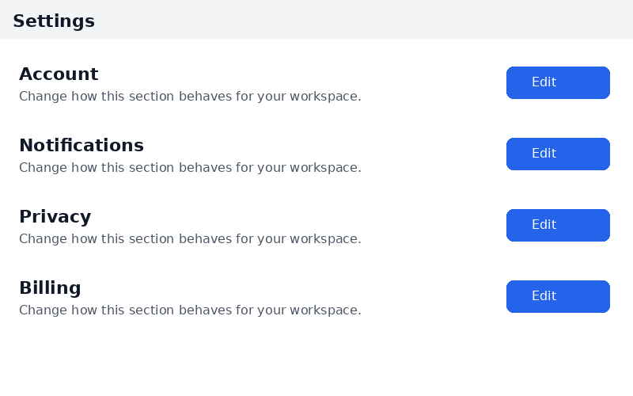
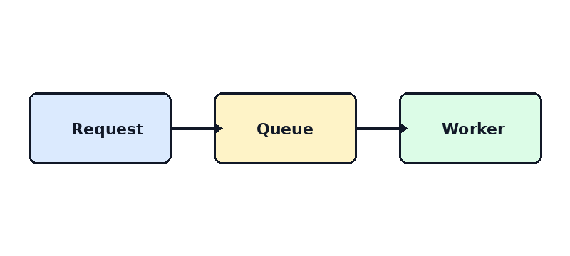
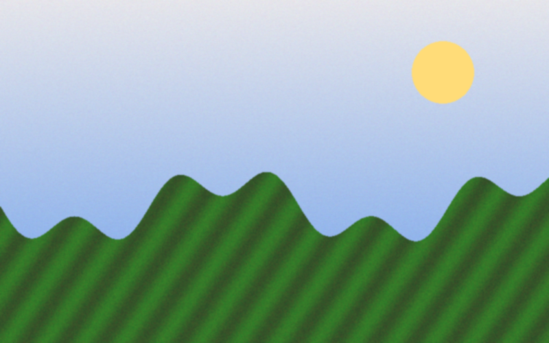
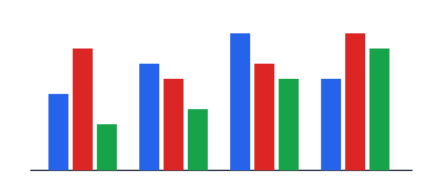

Images
Screenshot
Expected: inverted to dark, with the blue buttons still blue.

Diagram
Expected: inverted to dark, box colours still told apart.

Photo
Expected: natural colours, slightly dimmed. Never a negative.

Dark icon on transparent
Expected: lightened so it stays visible on the dark page.
Chart image
Expected: dark background, bars still distinct.
